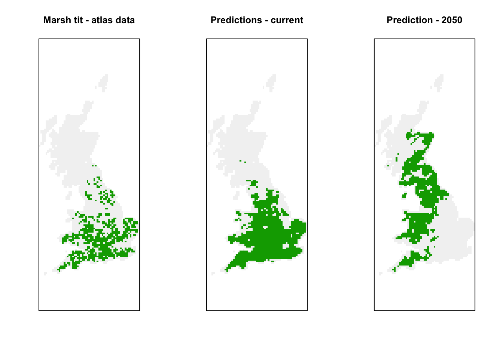
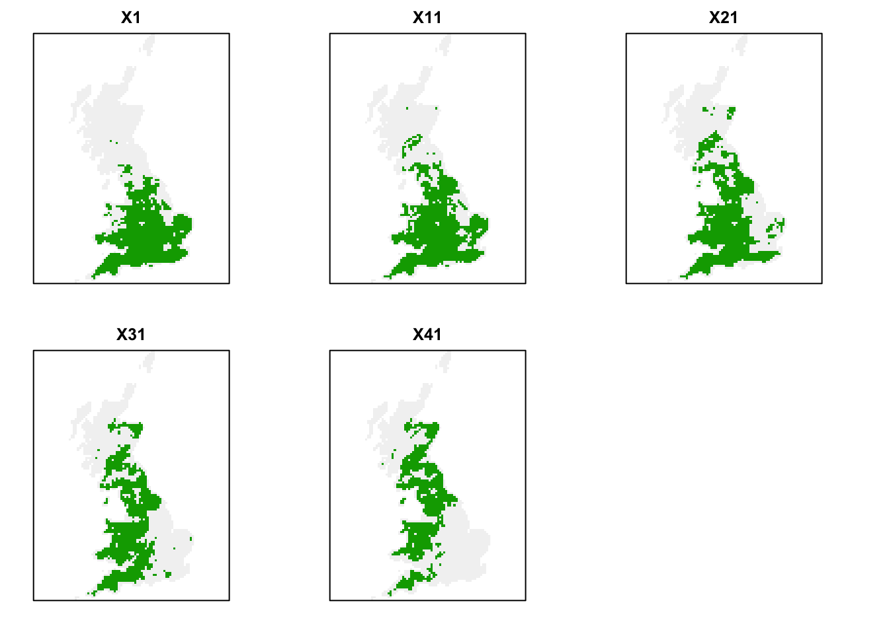
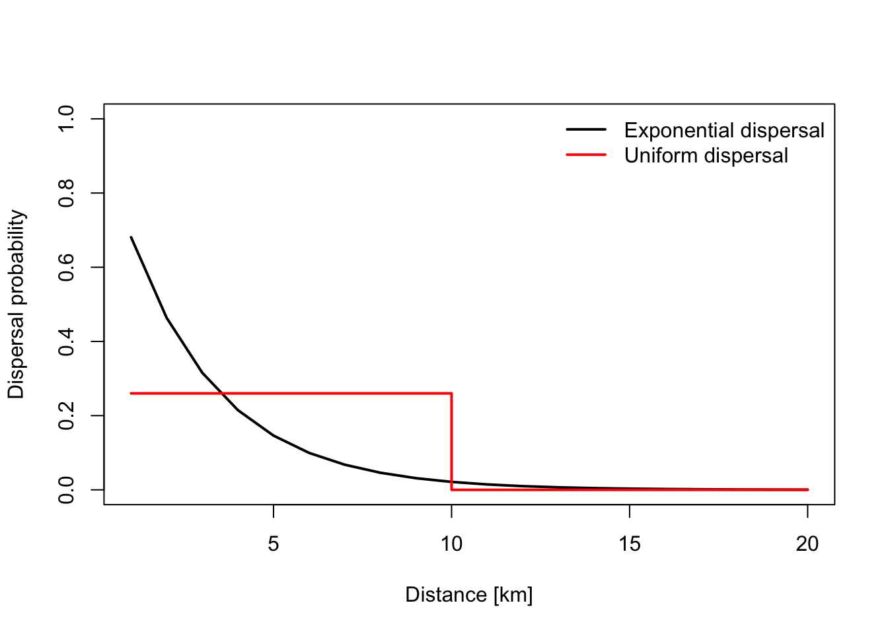
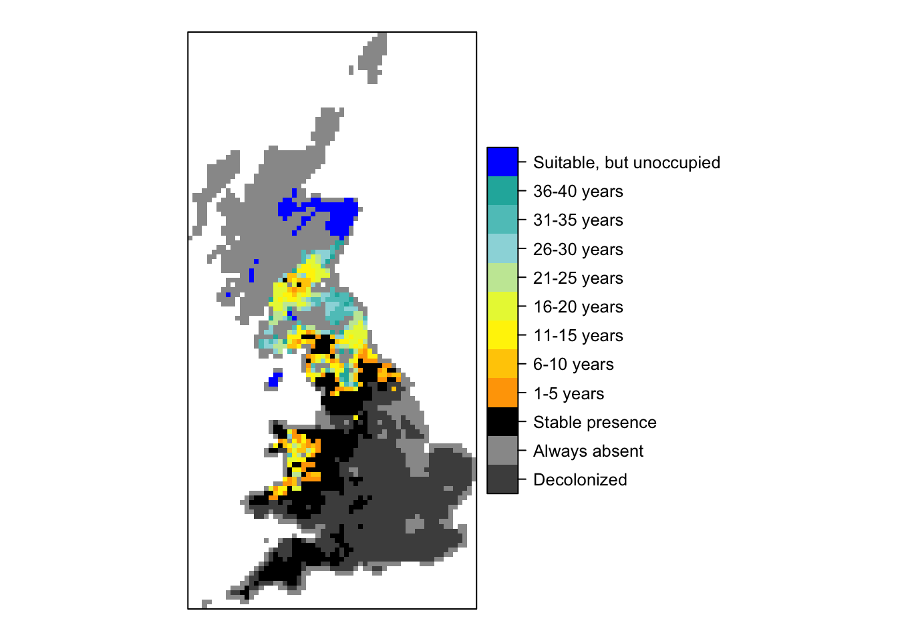
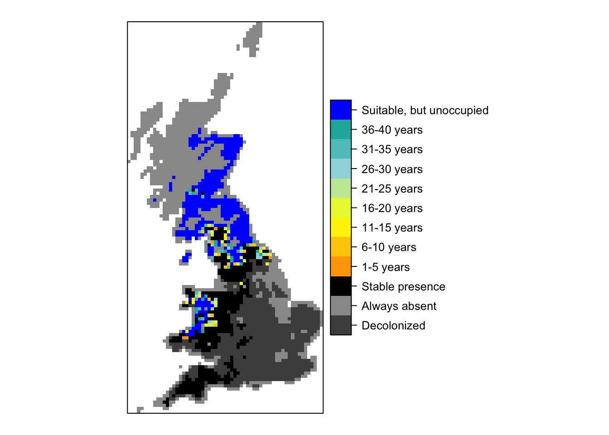

Simple dispersal models
1 Introduction
Over the last weeks, we got to know the general SDM workflow including evaluation and prediction, different SDM algorithms and ensemble modelling (Elith et al. 2006; Thuiller et al. 2009; Guisan, Thuiller, and Zimmermann 2017). With that, you should have a good overview how to work with SDMs in scientific and applied context. However, as we have discussed in class, global change induced range dynamics are affected by a number of processes including dispersal, demography and biotic interactions that are not explicitly accounted for in SDMs (Urban et al. 2016; Zurell 2017). There are a number of ways to couple SDMs with models incorporating these additional processes with the simplest being to couple SDMs with dispersal models that describe if and how fast the species is able to colonise new areas (Franklin 2010; Zurell et al. 2016). Today, we will work with such simple dispersal models that allow predicting large-scale colonisation dynamics, using the package MigClim (Engler, Hordijk, and Guisan 2012).
2 Species distribution model
2.1 Species data and environmental data
As in the previous prac, we will work with the dataset of British breeding and wintering birds (Gillings et al. 2019). The data contain breeding bird records in 20-year cycles (1968-1972, 1988-1991, 2008-2011 and) wintering bird records in 30-year cycles (1981/1982-1983-1984, 2007/2008-2010/2011) at a 10 km spatial resolution throughout Britain, Ireland, the Isle of Man and the Channel Islands. The data are available through the British Trust of Ornithology (www.bto.org) and can be downloaded here. If you were following the previous practicals, you should have the data on your local machine (e.g. in data folder).
Last session, we made a data frame of all breeding occurrences of the different species, concentrating on the breeding period 2008-2011. We considered only breeding occurrences that were tagged as “Confirmed” treating all cells outside the confirmed breeding sites as absences. Then, we spatially thinned the data to reduce problems with spatial autocorrelation.
We prepared climate and CORINE land cover data as environmental predictors. Also, we downloaded future climate scenarios for 2050 and past climate scenarios for the last glacial maximum. Please follow instructions in section 2 of prac 7.
2.2 Species distribution model and range projections
Once all data were prepared, we fitted simple generalised linear models considering only the four most important, weakly correlated variables. I stored all the models and can easily read them back in. Alternatively, please follow instructions in section 3 of prac 7.
# You may have to adapt the file path
load('UK_spp_thinned_n40.RData')
load('07_spp_models.RData')
load('07_env_preds.RData')
# Also, read in UK bird data
bird_dist <- read.table('data/distributions.csv',header=T, sep=',', stringsAsFactors = F)
grid_ref <- read.table('data/UK_10km_gridref.csv',header=T,sep=',', stringsAsFactors = F)For this prac, we will concentrate on the current and future predicted range of the Marsh Tit. This species occurs in the South of Britain and is predicted to find newly suitable range area further North in 2050
library(raster)
# UK background
proj_UK <- '+proj=tmerc +lat_0=49 +lon_0=-2 +k=0.9996012717 +x_0=400000 +y_0=-100000 +ellps=airy +datum=OSGB36 +units=m +no_defs'
bg <- rasterFromXYZ(data.frame(env_preds[,1:2],bg=1),crs=proj_UK)
# Extract marsh tit data
marsh_tit <- subset(bird_dist, period=="2008-11" & resolution==10 & season=='B' & island=='B' & status == 'Confirmed' & speccode==432)
marsh_tit <- merge(marsh_tit, grid_ref)
# Make raster from marsh tit occurrences
r_marsh_tit <- rasterFromXYZ(data.frame(marsh_tit[,c('EASTING','NORTHING')],occ=1))
r_marsh_tit <- extend(r_marsh_tit, bg)
values(r_marsh_tit)[!is.na(values(bg)) & is.na(values(r_marsh_tit))] <- 0
par(mfrow=c(1,3))
plot(r_marsh_tit,axes=F,legend=F,main='Marsh tit - atlas data')
plot(rasterFromXYZ(data.frame(env_preds[,1:2],env_preds_bin[,'sp_432'])),axes=F,legend=F,main='Predictions - current')
plot(rasterFromXYZ(data.frame(env_preds[,1:2],env_preds_fut_bin[,'sp_432'])),axes=F,legend=F,main='Prediction - 2050')
2.3 Time series of habitat suitability
Dispersal is typically modelled as a multi-step process meaning that we need a time series of habitat suitability. For simplicity, we assume that current climatic conditions relate to the year 2010 (as our species data stem from 2008-2011) climate change is linear between 2010 and 2050.
Please source the prediction function from practical 6 to run the following code.
# GET CLIMATE DATA
# Please note that you have to set download=T if you haven't downloaded the data before:
bio_curr <- getData('worldclim', var='bio', download=F, lon=-5, lat=55, res=5, path=my_filepath)
# UK extent in lon/lat coordinates
ext_uk <- c(-12, 3, 48, 62)
# Crop and reproject current climate
bio_curr <- crop(bio_curr, ext_uk)
bio_curr <- projectRaster(bio_curr, bg)
bio_curr <- resample(bio_curr, bg)
bio_curr <- mask(bio_curr, bg)
#-------
# GET FUTURE CLIMATE
bio_fut <- getData('CMIP5', var='bio', download=F, res=5, rcp=45, model='MC', year=50, path=my_filepath)
# Crop and reproject future climate
bio_fut <- crop(bio_fut, ext_uk)
bio_fut <- projectRaster(bio_fut, bg)
bio_fut <- resample(bio_fut, bg)
bio_fut <- mask(bio_fut, bg)
#--------
# GET LAND USE DATA
lc_agg <- stack(paste0(data_path,'lc_agg_10km.grd'))
#--------
# Standardise data
bio_curr_std <- scale(bio_curr)
bio_fut_std <- scale(bio_fut, center=attributes(attributes(scale(bio_curr))$data@values)$'scaled:center', scale=attributes(attributes(scale(bio_curr))$data@values)$'scaled:scale')
lc_std <- scale(lc_agg)
#-------
# Make time series predictions with 1 year intervals
bio_diff_1y <- (bio_fut_std - bio_curr_std)/40
UK_curr <- merge(data.frame(rasterToPoints(bio_curr_std)),data.frame(rasterToPoints(lc_std)))
pred_timeseries <- sapply(0:40,FUN=function(year){
if (year==0) {
pred <- make.preds(spp_models[['sp_432']], UK_curr )
} else
{
bio_fut_temp <- bio_curr_std + (bio_diff_1y * year)
UK_fut <- merge(data.frame(rasterToPoints(bio_fut_temp)),data.frame(rasterToPoints(lc_std)))
names(UK_fut) <- names(UK_curr)
pred <- make.preds(spp_models[['sp_432']], UK_fut )
}
return(pred)
})
# Make binary predictions
pred_timeseries_bin <- ifelse(pred_timeseries>= unlist(spp_eval['thresh','sp_432']),1,0)
# Plot maps
plot(rasterFromXYZ(data.frame(UK_curr[,1:2], pred_timeseries_bin ))[[c(1,11,21,31,41)]], axes=F, legend=F)
3 Dispersal model
We now use the MigClim package to simulate dispersal (Engler, Hordijk, and Guisan 2012). The model needs to know where the species is currently distributed, how suitable habitat is distributed (either continuous values of habitat suitability/occurrence probability or binary values of suitable/unsuitable), the number of time/dispersal steps, and the dispersal distances. Check out the help page ?MigClim.migrate to understand what kind of input data you need and how you have to set the parameters. Also, the user guide is quite helpful.
library(MigClim)
MigClim.userGuide()## If the user guide does not open automatically, it can be found in the following directory: /Library/Frameworks/R.framework/Versions/3.6/Resources/library/MigClim/doc/MigClim_userGuide.pdfFor running MigClim it is vital to have some information on the species’ dispersal ability. We can assume uniform dispersal probability over certain distance classes or assume distance-dependent dispersal probability. We usually refer to the latter as dispersal kernel, which is a mathematical equation describing the distance decay. In a first step, we simply assume that marsh tit can disperse 2.6 km per year (Sutherland et al. 2000). As our map resolution is 10km, we could say that the probability of reaching the adjacent cell within one year is 0.26. In a more complicated setting, we could define a dispersal kernel based on the negative exponential distribution (Sutherland et al. 2000): \[p_{disp}(x)=e^{-x/\theta}\] meaning that the probability \(p_{disp}\) to disperse over a distance \(x\) is a negative exponential function with an expected mean distance \(\theta\) - here, 2.6 km per year.
# Plot dispersal kernel
plot(1:20,exp(-(1:20)/2.6),type='l',lwd=2,xlab='Distance [km]',ylab='Dispersal probability',ylim=c(0,1))
lines(c(1,10,10,20),c(0.26,0.26,0,0),col='red',lwd=2)
legend('topright',lwd=2,col=c('black','red'),legend=c('Exponential dispersal','Uniform dispersal'),bty='n')
3.1 Uniform dispersal
First, we assume a uniform dispersal kernel meaning that dispersal to other cells is equally likely within the maximum dispersal distance. Here, we assume a maximum dispersal of 1 cell (or 10 km) per time step.
# Run the simulation for uniform dispersal of with probability of 0.26. Mean dispersal of marsh tit is 2.6 km per year
MigClim.migrate(iniDist = data.frame(UK_curr[,1:2], pred_timeseries_bin[,1]), # Data frame of initial distribution
hsMap = data.frame(round(pred_timeseries[,-1]*1000)), # Habitat suitability in range [0-1000]
rcThreshold = round(as.numeric(spp_eval['thresh','sp_432'])*1000), # Threshold for binarising [0-1000]
envChgSteps=40, # number of time steps with changing environmental condition
dispSteps=1, # number of dispersal steps within environmental step
simulName="Marsh_tit_unif", # name of output folder and files
replicateNb=1, # how many stochastic replicates
dispKernel=0.26, # vector of dispersal probability per distance class
overWrite=T)MigClim will create a folder simulName with the results. First, we look at the summary.
read.table("Marsh_tit_unif/Marsh_tit_unif_summary.txt",header=T)## simulName iniCount noDispCount univDispCount occupiedCount
## 1 Marsh_tit_unif 1130 393 891 802
## absentCount totColonized totDecolonized totLDDsuccess runTime
## 1 1973 437 765 0 0This summary table provides information on how many cells were intially occupied, how many cells would be occupied when assuming no dispersal or full (universal dispersal), how many cells are occupied at the end of the simulation, how many cells are empty, how many cells were colonized and decolonized during simulation, and how often did long-distance dispersal occur.
Next, we can load in the spatial simulation results.
raster("Marsh_tit_unif/Marsh_tit_unif_raster.asc")## class : RasterLayer
## dimensions : 122, 61, 7442 (nrow, ncol, ncell)
## resolution : 10000, 10000 (x, y)
## extent : 50000, 660000, 0, 1220000 (xmin, xmax, ymin, ymax)
## crs : NA
## source : /Users/zurell/data/Lehre/HU_Bsc_Msc/HU_M8_GCIB/GCIB-website/Marsh_tit_unif/Marsh_tit_unif_raster.asc
## names : Marsh_tit_unif_raster
## values : -2147483648, 2147483647 (min, max)summary(values(raster("Marsh_tit_unif/Marsh_tit_unif_raster.asc")))## Min. 1st Qu. Median Mean 3rd Qu. Max. NA's
## -4001.0 -1001.0 0.0 559.9 1.0 30000.0 4667The raster files contains different integer numbers (Engler, Hordijk, and Guisan 2012).
| Code | Meaning |
|---|---|
| 0 | Cell has never been occupied |
| 1 | Stable: cells that were initially occupied and remained occupied |
| 1 < value < 30,000 | The simulation step when a cell was colonized. Hundreds indicate the environmental step. Units indicate dispersal steps within environmental step (here just one). |
| 30,000 | Potentially suitable cells that remained unoccupied |
| value < 1 | Decolonized. The absolute numbers indiciate the simulation step when a cell became unoccupied |
Now, let’s map this. Note that I do quite a lot of number manipulation in this code. The code is not universally applicable but specific to our time series. Specifically, I plot colonisation fronts in 5-year intervals.
library(RColorBrewer)
library(rasterVis)
cls <- c('grey30','grey60', 'black', colorRampPalette(c('orange','yellow','PowderBlue','LightSeaGreen'))(8),"blue")
legend_colon <- c("Decolonized", "Always absent", "Stable presence", "1-5 years", "6-10 years", "11-15 years", "16-20 years","21-25 years","26-30 years","31-35 years","36-40 years","Suitable, but unoccupied")
res <- raster("Marsh_tit_unif/Marsh_tit_unif_raster.asc")
r_col <- res
values(r_col)[values(r_col)<0] <- -1
values(r_col)[values(r_col)==1] <- 1
values(r_col)[values(r_col)>1 & values(r_col)<30000 & !is.na(values(r_col))] <- round(values(r_col)[values(r_col)>1 & values(r_col)<30000 & !is.na(values(r_col))]/100 -1 ) %/% 5 + 2
values(r_col)[values(r_col)==30000] <- 10
res_f <- as.factor(r_col)
rat <- levels(res_f)[[1]]
rat[["Colonisation"]] <- legend_colon
levels(res_f) <- rat
levelplot(res_f, margin=F, scales=list(draw=FALSE), col.regions=cls)
3.2 Negative exponential dispersal
Next, we repeat the simulations using a negative exponential dispersal kernel with mean dispersal distance of 2.6 km.
# Run the simulation for negative exponential dispersal kernel with mean 2.6 km - note the 10 km resolution!
dist <- c(10,20)
dneg <- exp(-(dist/2.6))
MigClim.migrate(iniDist = data.frame(UK_curr[,1:2], pred_timeseries_bin[,1]), # Data frame of initial distribution
hsMap = data.frame(round(pred_timeseries[,-1]*1000)), # Habitat suitability in range [0-1000]
rcThreshold = round(as.numeric(spp_eval['thresh','sp_432'])*1000), # Threshold for binarising [0-1000]
envChgSteps=40, # number of time steps with changing environmental condition
dispSteps=1, # number of dispersal steps within environmental step
simulName="Marsh_tit_exp", # name of output folder and files
replicateNb=1, # how many stochastic replicates
dispKernel=dneg, # vector of dispersal probability per distance class
overWrite=T)
# Map colonisation ability
res <- raster("Marsh_tit_exp/Marsh_tit_exp_raster.asc")
r_col <- res
values(r_col)[values(r_col)<0] <- -1
values(r_col)[values(r_col)==1] <- 1
values(r_col)[values(r_col)>1 & values(r_col)<30000 & !is.na(values(r_col))] <- round(values(r_col)[values(r_col)>1 & values(r_col)<30000 & !is.na(values(r_col))]/100 -1 ) %/% 5 + 2
values(r_col)[values(r_col)==30000] <- 10
res_f <- as.factor(r_col)
rat <- levels(res_f)[[1]]
rat[["Colonisation"]] <- legend_colon
levels(res_f) <- rat
levelplot(res_f, margin=F, scales=list(draw=FALSE), col.regions=cls)
We see that colonisation is slower when assuming realistic dispersal kernels.
3.3 Negative exponential dispersal with habitat invasibility
If you wish to work without the thresholding option, then the values of habitat suitability (in the range 0:1000) are used as a cell “invasibility” index and are interpreted as an absolute probability of presence conditional on the species dispersing to the cell. Here, I only consider the continuous habitat suitability above the threshold.
# Set habitat suitability below threshold to zero.
hsi_thresh <- ifelse(pred_timeseries>= unlist(spp_eval['thresh','sp_432']),pred_timeseries,0)
# Run simulations
MigClim.migrate(iniDist = data.frame(UK_curr[,1:2], pred_timeseries_bin[,1]), # Data frame of initial distribution
hsMap = data.frame(round(hsi_thresh[,-1]*1000)), # Habitat suitability in range [0-1000]
rcThreshold = 0, # No reclassification
envChgSteps=40, # number of time steps with changing environmental condition
dispSteps=1, # number of dispersal steps within environmental step
simulName="Marsh_tit_invas_exp", # name of output folder and files
replicateNb=1, # how many stochastic replicates
dispKernel=dneg, # vector of dispersal probability per distance class
overWrite=T)
# Map colonisation ability
res <- raster("Marsh_tit_invas_exp/Marsh_tit_invas_exp_raster.asc")
r_col <- res
values(r_col)[values(r_col)<0] <- -1
values(r_col)[values(r_col)==1] <- 1
values(r_col)[values(r_col)>1 & values(r_col)<30000 & !is.na(values(r_col))] <- round(values(r_col)[values(r_col)>1 & values(r_col)<30000 & !is.na(values(r_col))]/100 -1 ) %/% 5 + 2
values(r_col)[values(r_col)==30000] <- 10
res_f <- as.factor(r_col)
rat <- levels(res_f)[[1]]
rat[["Colonisation"]] <- legend_colon
levels(res_f) <- rat
levelplot(res_f, margin=F, scales=list(draw=FALSE), col.regions=cls)
Other applications:
Of course, simulating dispersal explicitly is not only useful for scenarios of global change. It could also be used for simulating potential outcome of species re-introductions or invasions.
- How would you proceed if you wanted to test adequate re-introduction sites?
- How would you proceed if you wanted to identify priority areas for invasion control?
References
Elith, J., C. H. Graham, R. P. Anderson, M. Dudik, S. Ferrier, A. Guisan, R. J. Hijmans, et al. 2006. “Novel Methods Improve Prediction of Species’ Distribution from Occurence Data.” Ecography 29: 129–51.
Engler, Robin, Wim Hordijk, and Antoine Guisan. 2012. “The Migclim R Package - Seamless Integration of Dispersal Constraints into Projections of Species Distribution Models.” Ecography 35: 872–78.
Franklin, Janet. 2010. “Moving Beyond Static Species Distribution Models in Support of Conservation Biogeography.” Diversity and Distributions 16: 321–30.
Gillings, Simon, Dawn E. Balmer, Brian J. Caffrey, Iain S. Downie, David W. Gibbons, Peter C. Lack, James B. Reid, J. Tim R. Sharrock, Robert L. Swann, and Robert J. Fuller. 2019. “Breeding and Wintering Bird Distributions in Britain and Ireland from Citizen Science Bird Atlases.” Global Ecology and Biogeography 28 (7): 866–74. https://doi.org/10.1111/geb.12906.
Guisan, A., W. Thuiller, and N. E. Zimmermann. 2017. Habitat Suitability and Distribution Models with Applications in R. Cambride University Press.
Sutherland, Glenn D., Alton S. Harestad, Karen Price, and Kenneth P. Lertzman. 2000. “Scaling of Natal Dispersal Distances in Terrestrial Birds and Mammals.” Conservation Ecology 4: 16.
Thuiller, W., B. Lafourcade, R. Engler, and M. B. Araujo. 2009. “BIOMOD - a Platform for Ensemble Forecasting of Species Distributions.” Ecography 32: 369–73.
Urban, M. C., G. Bocedi, A. P. Hendry, J.-B. Mihoub, G. Pe’er, A. Singer, J. R. Bridle, et al. 2016. “Improving the Forecast for Biodiversity Under Climate Change.” Science 353: aad8466.
Zurell, D. 2017. “Integrating Demography, Dispersal and Interspecific Interactions into Bird Distribution Models.” Journal of Avian Biology 48: 1505–16.
Zurell, D, W Thuiller, J Pagel, JS Cabral, T Muenkemueller, D Gravel, S Dullinger, et al. 2016. “Benchmarking Novel Approaches for Modelling Species Range Dynamics.” Global Change Biology 22: 2651–64.